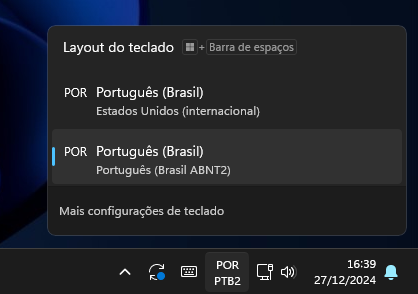

Tergo Sofle - Versão Wireless - Manual de Usuário
O lançamento da versão sem fio é novidade para você? Clique aqui e leia sobre esse lançamento.
Este manual é especificamente para a versão sem fio do teclado Tergo Sofle.
Se você adquiriu a versão com fio, veja o manual da versão com fio.
Resumo
Neste manual você vai saber os aspectos importantes para utilizar seu teclado Tergo Sofle.
Aproveite sua jornada!
Com um passo de cada vez, entenda cada aspecto do seu teclado.
Os guias te ajudarão e estão super detalhados, para que você desfrute do máximo potencial de cada aspecto do seu teclado.
Instalação
-
Conecte o receptor do teclado ao seu computador;
-
Ligue as metades do teclado empurrando as chaves laterais para frente.
Adicione o teclado ao seu sistema operacional
O seu teclado pode vir configurado no padrão internacional (ASNI) ou em português (ABNT2).
Entretanto, pode ser necessário realizar uma configuração adicional no seu computador.
Para o correto funcionamento do teclado, o layout de teclado configurado no seu computador precisa seguir o padrão do seu teclado.
Se o teclado que você utilizava no seu computador antes do Tergo Sofle era no padrão ABNT2 (teclados com a tecla Ç presente) e ele funcionava normalmente, o seu teclado Tergo Sofle que você adquiriu no padrão ABNT2 também deve também funcionar normalmente sem necessidade de modificações extras.
Entretanto, se o seu teclado era ABNT2 e você adquiriu o teclado Tergo Sofle no padrão internacional (ou vice-versa), provavelmente terá que realizar a configuração adicional abaixo.
No Windows 11, por exemplo, as imagens abaixo representam respectivamente o layout de teclado internacional (ASNI) e o ABNT2.
Clique aqui para ver um breve vídeo de como configurar isso no Windows 11.
No sistema operacional Mac (Apple)
No Mac, o fluxo pode ser diferente. A princípio, siga o seguinte fluxo para configurar o teclado no padrão internacional (ASNI):
System Settings > Change Keyboard Type > ANSI (U.S.)
Layout de teclas
Padrão Internacional

As teclas com a letra L seguida de um número (como o L2) indicam teclas que ao serem seguradas mudam a camada de teclas do seu teclado.
O conceito de camada de teclas será explicado mais abaixo neste manual.
Como fazer acentos e teclas especiais?
Para acentos agudos, no padrão internacional, basta clicar a tecla de aspas e então a letra que quer.
Para o Ç, clique na tecla de aspas e na letra C.
Para o símbolo de til (~), segure a tecla Fn (tecla do dedão esquerdo) e clique A. Em seguida, você pode largar a tecla segurada e clicar na letra que deseja.
Para o símbolo grave (`), segure a tecla Fn (tecla do dedão esquerdo) e clique Q. Em seguida, você pode largar a tecla segurada e clicar na letra que deseja.
Clique aqui para ver um breve vídeo que demonstra como usar teclas no padrão internacional.
Mudar para o padrão brasileiro ABNT2 ou vice-versa
Caso prefira, você pode mudar para o padrão ABNT2 ou para o Internacional.
Esse guia ensina detalhadamente como fazer isso.
A foto abaixo representa o padrão ABNT2. As teclas abaixo em vermelho são as que mudam em relação ao layout internacional.

Recarga e Baterias
Duração
A bateria de cada metade do teclado tem recarga com duração estimada em 1 mês considerando uso diário de 8 horas e sem desligar.
Descanso automático
Após 15 minutos sem ser usado, o teclado entra em modo de "sono profundo", que diminui o consumo de bateria. Ele é acordado na próxima interação com o teclado.
Recarga
Para recarregar:
- Deixe a chave na posição de ligado (para frente)
- Conecte o USB à metade do teclado que será carregada
Enquanto estiver carregando corretamente, uma luz azul próxima à entrada do USB permanecerá ligada.
Quando a carga total for atingida, ela irá desligar.
A carga total é atingida dentro de 1 hora.
Recarregue ambas metades conforme necessário.
Tome cuidado para não forçar a chave lateral de liga/deliga para não quebrá-la acidentalmente.
Por mais que desligar as metades do teclado enquanto não estiver em uso possa contribuir com a duração da carga, a diferença tende a ser pouco relevante dado a presença do descanso automático do teclado.
Nesse caso, torna-se dispensável desligar as metades do teclado no dia a dia durante o uso recorrente.
Recomenda-se desligar as metades para os casos de:
- Deixar o teclado parado ou guardado por um tempo
- Levar o teclado para viajens ou enviá-lo pelo correio
- Realizar manutenções e o abrir
Recomenda-se não deixar o teclado descarregar totalmente para recarregá-lo. Carregue-o eventualmente enquanto em uso a cada 15-20 dias.
Inclinadores - Como encaixá-los
As vantagens de ergonomia e maneiras recomendadas de usar os inclinadores serão detalhados no próximo guia - o de ergonomia.
Para encaixar os inclinadores, fique atento ao recorte que cada inclinador possui em um dos cantos.
Assim, o inclinador deve ficar com a parte com recorte para baixo, ou seja, na direção do usuário, e coincidindo com o buraco do LED.
Consulte o exemplo abaixo.
Caso você esteja colocando errado, você sentirá resistência dos imãs para encaixar o inclinador.

Receptor
Com tela

O receptor com tela te fornece ótimos feedbacks visuais sobre funcionalidades do teclado, como:
- Nível de bateria das metades
- Dongle conectado ao computador
- Dispositivos bluetooth conectados (isso será explicado em um tópico mais abaixo)
- Teclas especiais ativas (CMD, Alt, Ctrl, Shift, CapsLock, etc)
- Camada ativa
Você vai perceber que o nível de bateria mostrado na tela não baixa de forma linear.
É normal parecer que inicialmente baixa rápido (de 100% para 80%), mas é apenas uma limitação visual.
Enquanto você estiver carregando uma metade do teclado, ele mostrará 100%. Guie-se pela luz azul explicada em tópicos anteriores para saber se sua bateria está carregada.
Quando a bateria chegar, na tela, a 0%, o indicador sumirá. Mas seu teclado ainda terá carga para funcionar por certo tempo. Entretanto, recomenda-se colocá-lo para carregar assim que possível.
ZMK Studio: Software para configuração
Acessar o ZMK Studio
Após abrir o ZMK Studio e selecionar seu teclado, você verá uma mensagem na sua tela pedindo para "desbloquear" seu teclado.
Há 2 formas de fazer isso.
A primeira é:
- Primeiro: Segure a tecla para acessar a camada de ajustes (conforme exemplo abaixo)
- Segundo: Clique na tecla
ESC(tecla mais superior à esquerda no teclado)
A segunda forma é:
- Clicar ao mesmo tempo as 2 teclas mostradas na imagem mais abaixo.
Consulte as imagens abaixo.
Forma 1 de desbloquear:

Forma 2 de desbloquear (a partir da versão 1.2.0 do firmware):

O teclado usa a interface para configurações em tempo real ZMK Studio.
Você pode utilizar o ZMK Studio no próprio navegador ou baixar o aplicativo para seu sistema operacional.
Abra o ZMK Studio e selecione seu teclado para fazer customizações. As modificações são feitas em tempo real.
Sobre o ZMK Studio
Aproveite e já abra o ZMK Studio, e navegue pelas camadas de teclas para entender a posição de cada tecla em cada camada. Não se assuste, é mais simples do que parece.
Com o ZMK Studio, você tem funcionalidades diversas. Algumas das principais que você provavelmente utilizará são:
- Ver o mapeamento de cada tecla;
- Modificar o que cada tecla faz;
- Modificar camadas;
- Entre outros.
O ZMK Studio é uma tecnologia muito recente e vem aos poucos lançando novidades.
Algumas customizações ainda não podem ser feitas diretamente por ele e requerem programação.
Você pode aprender a como modificar o código-fonte do seu teclado consultando o guia de customização do código-fonte.
O que o ZMK Studio suporta hoje e o que está previsto de funcionalidades pode ser visto clicando aqui.
Fique por dentro de atualizações que a Tergo Teclados lançar para ter a versão mais atual do seu software sempre disponível.
Salve ou dispense suas customizações
Após realizar a customização, no canto superior direito você pode salvar ou descartar as customizações.
Se você não salvar, elas serão resetadas na próxima reinicialização do teclado.
Como resetar configurações
Para resetar suas customizações para a configuração de fábrica, clique em Tergo Sofle no topo da tela e então em Restore Stock Settings.
Camadas de teclas
O sistema de camada de teclas faz com que todas as teclas do teclado estejam acessíveis em outras camadas.
Perceba que diversas teclas especiais, a princípio, não se encontram na camada base do seu teclado, mas sim em outras camadas. Essas teclas podem ser: símbolos especiais, F1-F12, botões de navegação e setas.
Isso justamente porque esses botões costumam ficar em posições mais distantes, que requerem bastante movimento para serem alcançadas.
Com o sistema de camada de teclas, elas ficam mais próximas de você, a uma camada de distância.
É parecido como a tecla Shift funciona no seu teclado tradicional. Quando você segura o Shift, as teclas que são números assumem uma nova funcionalidade: símbolos. E as letras normais viram maiúsculas.
A diferença é que você pode programar o que quer ver em cada camada: configure uma tecla para mudar de camada e configure o que você quer de teclas nessa camada.
Use a interface do ZMK Studio para entender facilmente o conteúdo de cada camada e use a foto de exemplo abaixo para se guiar!
As camadas que já vem com o seu teclado são:
- camada base
- símbolos e navegação
- controle de mídia
- simulador de mouse
- teclado numérico
- ajustes
Veja o exemplo abaixo:

Restaurar configurações originais
Caso tenha realizado customizações pelo ZMK Studio, você pode restaurar para as configurações originais no próprio ZMK Studio.
Para isso, clique em Tergo Sofle (no topo da tela) e, em seguida, em Restore Stock Settings.
Modo básico e adepto
O teclado vem configurado com uma funcionalidade que chamamos de "modo do teclado", sendo eles:
- Modo básico;
- Modo adepto: que é o modo básico com funcionalidades adicionais.
Você pode acessá-los por meio da camada de ajustes (segurando a tecla abaixo da tampa direita) e clicando X (modo básico), ou C (modo adepto).
Além disso, reservamos um "modo" extra, para você mesmo customizar para seu uso. Nesse caso, clique V (é uma cópia idêntica do modo básico).
Pela imagem abaixo você encontra essas teclas para alterar entre os modos:

O modo básico e adepto são simplesmente aplicações do sistema de camada de teclas. Essas camadas são as de número 0, 1 e 2 (que podem ser visualizadas facilmente no software de customização). A camada 0, também chamada de "Basic", é a padrão. A camada 1, também chamada de "Adept", é uma extensão da camada 0, que vem configurada com novas funcionalidades especiais mais avançadas. A camada 2 é uma camada extra para você modificar do jeito que quiser. É uma cópia da camada 0. Quando você alterna entre os modos, o que você está fazendo é trocar qual a camada base que fica ativa do seu teclado. Ou seja, definindo quais são as teclas da base do seu teclado, que estarão ativas enquanto você não está acessando nenhuma outra camada.
Funcionalidades que já vem configuradas no modo adepto (camada 1)
O modo adepto muda qual é a camada base.
Você pode colocar o que quiser na camada que corresponde ao modo adepto (camada 1), mas ela é chamada assim pois já vem com funcionalidades interessantes configuradas que devem tornar sua experiência de digitação ainda mais avançada.
Essas funcionalidades consistem de teclas com comportamentos especiais que visam uma experiência ainda mais ergonômica e avançada de digitação. Em destaque, ele adiciona teclas com:
-
Duplo comportamento para a tecla espaço (também conhecido como Tap-Hold) para ir à camada do simulador de mouse se segurada;
-
Comportamento Tap-Hold nas teclas da Home Row para utilização de modificadores.
Não se assuste! Te explicamos tudo. Um passo por vez.
Recomenda-se que você explore o restante do manual e, em seguida, o guia de como digitar com ergonomia, e que se adapte ao teclado antes de você experimentar essas funcionalidades do modo adepto.
Alterar entre o modo básico e adepto não é persistente, voltando ao modo básico caso o teclado seja reiniciado.
Atalhos no teclado
Algumas configurações são feitas no próprio teclado.
Estando na camada de ajustes (por padrão segurando a tecla do lado direito abaixo da região coberta), você conta com atalhos para opções diversas.
Além disso, você pode visualizar o mapeamento de todas essas teclas e modificar pela interface do ZMK Studio.

Alterar camada base
Enquanto na camada de ajustes, altere entre as 3 possíveis camadas base configuradas clicando X, C ou V.
Conectar dispositivos Bluetooth e alterar entre dispositivos conectados
O Tergo Sofle Wireless suporta conectar e controlar individualmente múltiplos dispositivos que possuem Bluetooth.
Você pode, por exemplo, usar o teclado no seu computador e, eventualmente, trocar o foco dele para seu notebook ou smartphone para responder alguém.
Isso acontece por meio da presença do receptor, que gerencia as comunicações do teclado.
Entenda a funcionalidade e como utilizá-la vendo o guia de como conectar multiplos dispositivos.
Cuidados com seu teclado
Tenha atenção em relação aos seguintes pontos:
- Forçar as chaves laterais de ligar/desligar
- Forçar os conectores USB superiores ao conectar cabos
- Líquidos perto do seu teclado
- Desmontar o teclado sozinho (consulte o manual de montagem e manutenção caso queira fazer isso)
O teclado Tergo foi feito para ser durável e facilmente renovável.
Entretanto, ninguém quer presenciar defeitos no seu produto por conta de potenciais mal usos.
Como digitar com o teclado Tergo
Este guia é o próximo que você deve seguir após ler este atual.
Visite o guia de como digitar com ergonomia e entenda as maneiras ideais de utilizar seu teclado Tergo.
Atualizar firmware
A Tergo Teclados pretende lançar futuramente melhorias no Firmware do teclado e você deve ser notificado disso. Para atualizar o firmware, consulte o guia de como atualizar o firmware.
Trocar receptor
O processo de trocar o receptor do teclado por um novo é o mesmo que o de atualizar o firmware.
É importante notar que não há como ter 2 receptores prontos para uso a qualquer momento. O teclado requer passar pelo processo de uma nova gravação do firmware para funcionar com o novo receptor.
Consulte o guia mensionado anteriormente.
Modificar manualmente o firmware
Isto aqui é considerado um tópico avançado, para você que tem interesse em programar e modificar diretamente o código-fonte do seu teclado.
Existem modificações mais específicas que a interface ZMK Studio ainda não oferece mas que podem ser modificadas no próprio firmware. Isso vai requerer conhecimento em programação e baixar softwares.
No guia de funcionalidades do teclado é comentado o que já é suportado pelo software ZMK Studio e o que ainda não é.
Para se aventurar no mundo de modificação do firmware, use o Manual de Modificação do Firmware.
Próximos passos
Vá para o guia de como digitar com ergonomia e descubra a maneira recomendada para digitar.
Contato
Caso não consiga suprir sua dúvida com a documentação ou esteja tendo dificuldade, a Tergo está sempre disponível para te ajudar.
Mande mensagem para o WhatsApp da Tergo clicando aqui (+5548992173491)